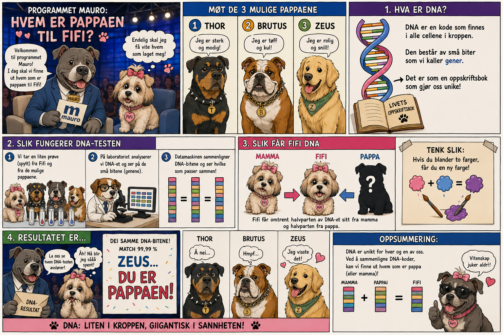

🎯 DENNE HISTORIEN ØVER PÅ
Rekkefølge: først, deretter, etterpå, til slutt. Årsak og følge: derfor, dermed.
Etter bindeordet kommer verbet med en gang. Dette er naturfag.
Etter bindeordet kommer verbet med en gang. Dette er naturfag.

Les historien. Se på ordene som er markert.
📚 Viktige ord
DNA = arvestoffet som inneholder genetisk informasjon
Celle = en liten byggestein som kroppen består av
Gen = en del av DNA-et som inneholder biologisk informasjon
Arve = å få genetisk informasjon fra foreldrene sine
Egenskap = noe som kjennetegner en person, for eksempel øyefarge
DNA-prøve = biologisk materiale som brukes for å undersøke DNA
DNA-profil = et mønster av utvalgte DNA-markører som kan brukes til sammenligning
Sammenligne = å se hva som er likt og forskjellig
Slektning = en person man er i familie med
Biologisk forelder = personen man har arvet DNA fra
Identifisere = å finne ut hvem noen er
Bevis = informasjon eller funn som kan støtte en konklusjon
bindeord
verb
hvem
bindeord
verb
hvem
✍️ Fortell med egne ord hvordan forskerne fant ut hvem som er pappaen til Fifi.
Bruk minst to av disse ordene: først, deretter, etterpå, til slutt, derfor, dermed.
Bruk minst to av disse ordene: først, deretter, etterpå, til slutt, derfor, dermed.
Du kan begynne slik:
Først tok forskerne en DNA-prøve fra Fifi.
Til slutt fikk Fifi vite hvem pappaen var.
Til slutt fikk Fifi vite hvem pappaen var.
🎧 Lytt til hver del. Ikke se på teksten. Etterpå skal du fortelle med dine egne ord hva du hørte.
⭐ Ukens ord
🐶 Fifi husker: «Jeg har fått omtrent halvparten av DNA-et mitt fra mamma og halvparten fra pappa. Derfor kan forskere sammenligne DNA-et vårt for å undersøke om vi er i biologisk familie!» 🧬🐾
🐶 Fifi husker: «Forskerne fant mange like DNA-markører hos meg og Zeus. Dermed visste de at han er pappaen min!» 🎉
🐶 Fifi husker: «Jeg ligner på mamma i fargen. Dessuten har jeg noen egenskaper fra pappa også.» 🐾
Etter bindeordet kommer verbet – og så hvem.